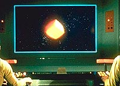
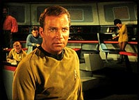
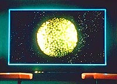
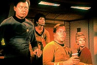
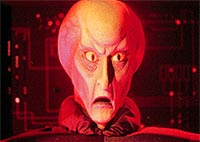
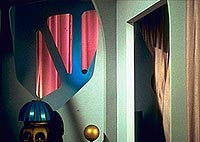
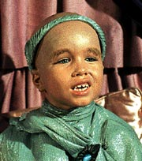

|
MANCHETE
DO EPISÓDIO
História
se apóia em verossimilhança
e proporciona evolução de personagens
Episódio
anterior | Próximo episódio
Sinopse:
Data Estelar:
1512.2.
Ao explorar uma região não-mapeada do espaço,
a USS Enterprise encontra uma bóia espacial alienígena em formato
de cubo. O artefato tinha como objetivo afastar naves passantes,
bloqueando o caminho à frente.
 Quando
a bóia começa a emitir níveis intoleráveis de radiação, Kirk
ordena um disparo de feisers para destruí-la. A nave prossegue no
mesmo curso, na esperança de encontrar a civilização responsável
pelo bloqueio, o que não tarda a acontecer. Uma nave gigantesca e
esférica, a Fesarius, logo intercepta a Enterprise, capturando-a.
Um ser que se identifica como Balok entra em contato e diz a Kirk
que a Enterprise violou o espaço da Primeira Federação e por isso
será destruída. Kirk, aplicando um blefe reminiscente de jogos de
pôquer, tenta convencer Balok de que um dispositivo chamado
Corbomite causa a destruição imediata de qualquer nave que ataque
a Enterprise.
Acreditando em Kirk, a Fesaruius decide cancelar a destruição da
Enterprise e apenas levá-la sob custódia até um planeta da
Primeira Federação, onde a tripulação seria desenbarcada e a
nave desmontada.
 Uma
pequena nave sai da Fesarius e trava um raio trator na Enterprise,
conduzindo-a a seu destino. Após forçar os motores ao máximo,
Kirk consegue escapar do raio trator, causando a debilitação da
nave inimiga, que então envia um pedido de socorro à Fesarius.
Kirk, McCoy e o tenente Bailey formam um grupo que irá à nave
alienígena para prestar assistência. Ao chegar lá, eles descobrem
que os dois veículos eram comandados por apenas uma entidade amigável
e parecida com uma criança. Ela usava a imagem antes vista pela
Enterprise apenas como uma imagem para intimidar potenciais
inimigos, sabendo que sua real estatura seria muito menos
assustadora.
 O
grupo descobre também que a nave alienígena não foi danificada,
mas que Balok estava apenas testando a Enterprise para ver se seus
tripulantes eram tão pacíficos quanto diziam ser.
O encontro termina com o estabelecimento de relações diplomáticas
entre as duas federações, e o tenente Bailey fica a bordo da
Fesarius como um estudante em intercâmbio para aprender os costumes
alienígenas e ensinar os valores da Federação.
Comentários:
"The Corbomite Maneuver" é
uma história que trabalha acima de tudo com a verossimilhança,
abordando as dificuldades que permeiam o primeiro contato com outras
culturas. Na colcha de retalhos entram a incompreensão, a
desconfiança e a falta de comunicação entre as partes envolvidas.
 Por
ser apenas o primeiro episódio regular da série, após os pilotos "The
Cage" e "Where
No Man Has Gone Before", ele talvez ainda não tenha
pego totalmente o ritmo que seria imprimido nos segmentos
posteriores. Há até quem diga que o andamento seguido aqui é um
pouco arrastado --mas seguramente nada que desmereça a execução
dessa boa história.
O enredo faz bom uso do tradicional estilo "monstro da
semana", adotado por praticamente todas as séries de ficção
científica da época, justamente por subverter totalmente o
conceito no final do episódio. A mensagem é clara: as aparências
enganam. Balok não é nada do que deveria ser, levando em conta sua
caracterização inicial.
 Trata-se
de um episódio bem forte na construção dos personagens da série.
Leonard Nimoy até costuma dizer que Spock de fato nasceu dentro
dele durante a produção deste segmento. E ele pode muito bem ter
razão: a verdadeira fireza de Spock começa a brotar nesse episódio.
Mas ninguém sai ganhando mais do que o bom e velho capitão Kirk,
que estabelece aqui sua extraordinária presença no centro da
ponte.
Kirk é um líder nato e a tripulação claramente demonstra sua
confiança nele. Bailey aparentemente foge ao tom, ao questionar seu
capitão. Na verdade, este personagem está lá para representar o
telespectador --um sujeito comum, sensibilizado por todos os perigos
e as emoções da exploração espacial. Ele só passa a ser
realmente um tripulante e a reconhecer a ascendência de Kirk após
o capitão o dispensar do serviço.
 McCoy
já começa a desenvolver sua amizade com Kirk, assim como sua
rabugice habitual, embora ainda não seja o contraponto para Spock
que se tornaria posteriormente. (Essa relação só surgiria muito
mais tarde, em grande parte por obra do roteirista e produtor Gene
Coon.)
Scotty aparece pouco, mas quando o faz, abrilhanta o episódio. Sulu
e Uhura não passam de mais dois tripulantes da Enterprise, sem
qualquer destaque especial. E a ordenança Rand, então, nem se
fala: a empregadinha do capitão. Sinal dos tempos...
Os diálogos, imbuídos de algumas sensacionais tiradas de humor, já
começavam a mostrar todo o carisma dos personagens.
 O
episódio está cheio de tomadas espaciais feitas especialmente para
a ocasião, fugindo ao padrão tradicional "Enterprise em órbita
do planeta". Os efeitos, se não são tecnicamente perfeitos,
ao menos dão uma noção exata do que está acontecendo, do tamanho
e da forma das naves, algo não muito comum na Série Clássica.
Balanço final: um grande episódio, construído sobre bases sólidas
e com boa caracterização dos personagens. Dificilmente alguém
poderia pedir mais de um episódio de abertura de uma série.
Citações:
McCoy - "If I jumped every time a
light came on around here, I'd end up talking to myself."
("Se eu ligasse para cada vez que uma luz piscasse por aqui, eu
acabaria falando sozinho.")
Bailey - "Raising my voice back there doesn't mean I was
scared or couldn't do my job. It means I have a human thing called
an adrenaline gland."
("Levantar o tom de voz lá atrás não significava que eu
estava assustado ou não podia fazer meu trabalho. Significa que eu
tenho uma coisa humana chamada glândula de adrenalina."
Spock - "It sounds most inconvenient. Have you considered
having it removed?"
("Parece muito inconveniente. Você já considerou a
possibilidade de extraí-la?")
Kirk - "Not chess, Mr. Spock... Poker! Do you know the
game?"
("Não zadrez, sr. Spock... Pôquer! Conhece o jogo?")
Trivia:
 O episódio, primeiro da temporada a ser produzido mas apenas o décimo
a ser exibido, marca a primeira aparição de Leonard McCoy, Janice
Rand e Uhura.
O episódio, primeiro da temporada a ser produzido mas apenas o décimo
a ser exibido, marca a primeira aparição de Leonard McCoy, Janice
Rand e Uhura.
Um blooper de
edição acaba chegando à versão final deste episódio. Quando
falta um minuto para o fim da contagem, Sulu responde a uma fala de
Balok que não chegou a ser incluída no episódio, deixando o
piloto falando sobre nada.
A bebida
Tranya nada mais é do que um horrível e quente suco de damasco.
A voz de Balok
foi dublada por Ted Cassidy, conhecido por seu papel com o mordomo
da Família Addams. Cassidy apareceria mais tarde na Série Clássica
como o andróide Ruk, do episódio "What
Are Little Girls
Made Of?".
Clint Howard,
que interpretou o Balok "real", é irmão do ator e
diretor Ron Howard.
Neste episódio
ocorre o primeiro uso da expressão "fascinante" por Spock.
Ficha
técnica:
Escrito por Jerry
Sohl
Direção de Joseph Sargent
Exibido em 10/11/1966
Produção: 03
Elenco:
William Shatner como James Tiberius Kirk
Leonard Nimoy como Spock
DeForest Kelley como Leonard H. McCoy
James Doohan como Montgomery Scott
Nichelle Nichols como Uhura
George Takei como Hikaru Sulu
Elenco convidado:
Clint Howard como Balok
Anthony Call como tenente David Bailey
Episódio
anterior | Próximo episódio
|